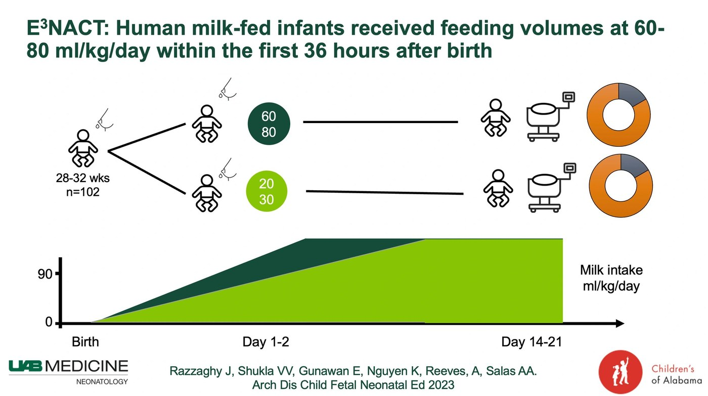

Our Journey Investigating Early & Exclusive Enteral Nutrition

In our exploration of feeding protocols for preterm infants, we've noticed a stark difference between high-income countries (HICs) and their low- and middle-income counterparts (LMICs). In HICs, the norm has been a slow introduction of enteral nutrition after a variable period of parenteral nutrition, raising concerns about delayed full enteral nutrition and its consequences. On the other hand, LMICs have been experimenting with early and exclusive enteral nutrition, showing promise in shorter hospitalizations and better weight gain.
With this glaring gap in mind, we embarked on a trial to unravel the mysteries of early and exclusive enteral nutrition for very preterm infants (28-32 weeks) within the cozy corners of a neonatal unit in a HIC. Our goal? To potentially influence gastrointestinal maturation, enhance growth, and maybe even cut down on those hospitalization costs.
We conducted an unmasked, parallel-group randomized controlled trial, where infants born between 28 to 32 weeks became the focal point. The magic happened through a computer-generated random-block sequence, with infants in one group receiving early and exclusive enteral nutrition (60 to 80 ml/kg/day within the first 36 hours) and the others following the usual care routine (20 to 30 ml/kg/day)
The results were nothing short of fascinating. A total of 102 infants were randomized. The intervention group, those infants on early and exclusive enteral nutrition, outshone the rest. They experienced a prolonged duration of full enteral feeding, chugging down more human milk in the first week, and even showed positive signs in body composition assessments around postnatal day 14. At 36 weeks postmenstrual age, they stood tall with higher length-for-age z-scores.
Our journey wasn't without hurdles. Three infants in the intervention group faced bilious emesis within the first five postnatal days. The plot thickened momentarily, but with the swift intervention of our medical team, all three infants resumed their feeding journey within 48 hours.
As we close this chapter, our trial suggests that early and exclusive enteral nutrition might be the key for very preterm infants in HICs. More full enteral feeding days, increased human milk intake, and positive body composition outcomes paint a promising picture. However, we're not ones to overlook caution – careful monitoring is crucial.
Where does this leave us? The findings of our trial hint at a potential shift in how we approach preterm infant feeding in HICs. Could this be the dawn of a new era in neonatal nutrition? Only time will tell, but we're committed to pushing the boundaries of knowledge and ensuring the best start for our tiniest warriors. Stay tuned for the next chapter in our ongoing quest for healthier beginnings!
Read the full article published in Archives of Disease in Childhood: Fetal & Neonatal here